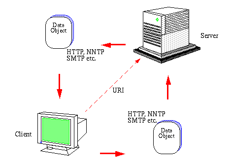

The descripiton of the Universal Resourse Identifiers , the Hypertex Transfer Protocol , and the Hypertext Markup Language now calls fo an updae of the Basic WWW-model as illstrated in the figure.

This model is a generic resource exchange model based on a client-server concept. Instead of te limited model with data flowing only from the server to the client, the client is capable ofo posting data to the server allows this kind of service. Furthermore, the format of the data transferred in te message body can have any format from 7-bit ASCII text to 8-bit binary data. The transfer carrier can be any protocol supported by the Word-Wide Web but the main protocol is HTTP as it can be used to encapsulate the other protocol suported, even a FTP message that is higly state dependent protocol.
Henrik Frystyk July 1994